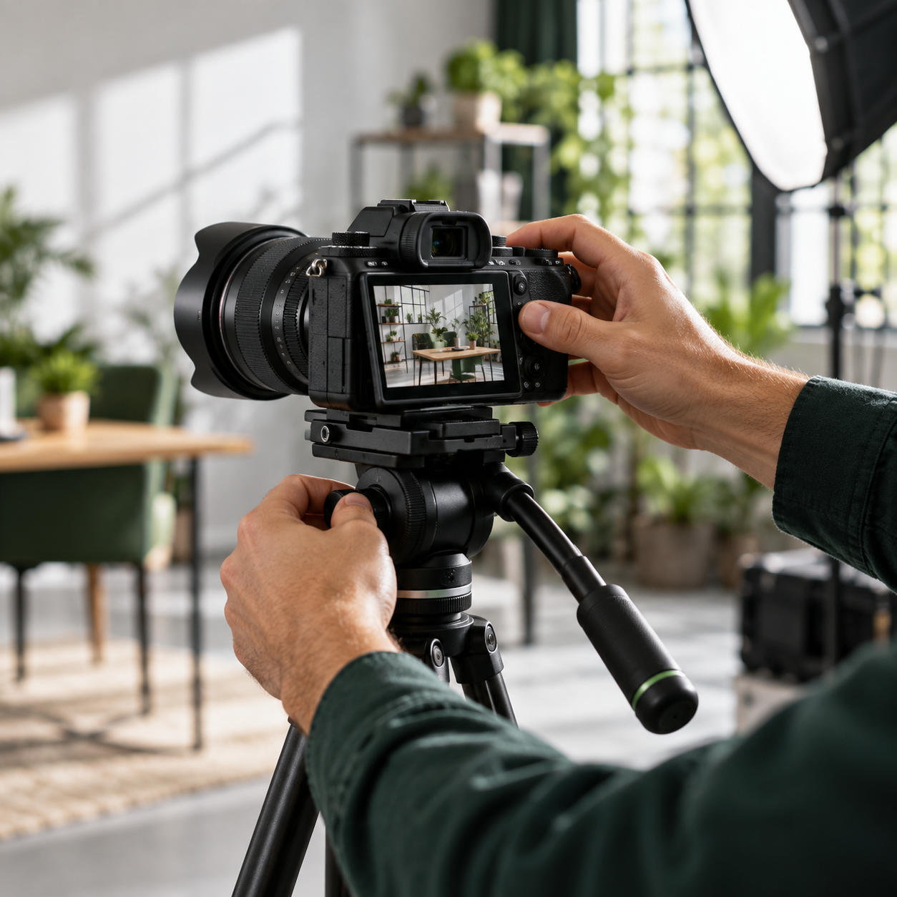
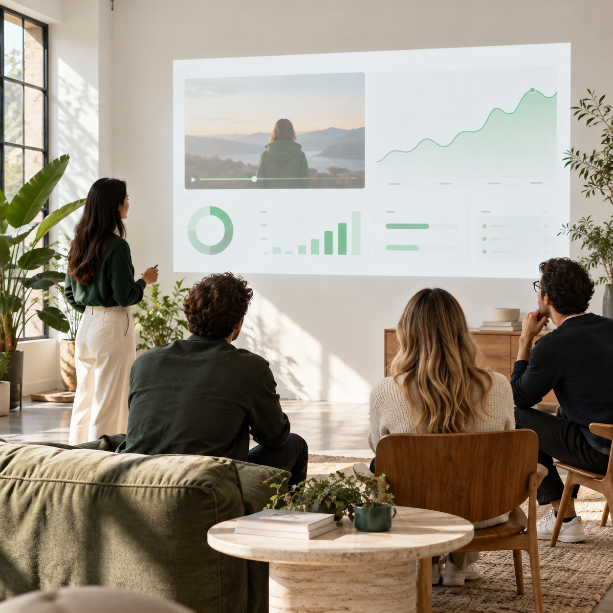

AUDIENCE QUESTIONSmall-team setup?
VIDEO INTELLIGENCE, MADE USEFUL
Stop guessing what video will work.
Turn audience signals, competitor moves and search demand into a video strategy your team can actually ship.
3×organic visibility
target
target
2×engagement
target
target
Set ambitious goals. Measure every move.
TRUSTED BY TEAMS BUILDING BETTER VIDEO SYSTEMS


SEE LUMETRICS IN ACTION
One calm workspace for your next winning video.
● LIVE PRODUCT WALKTHROUGHVideo intelligence, in motion
FROM VIDEO TO EVIDENCE
Every frame can hold a signal worth using.
Lumetrics reads performance, audience response and category context together—so your team sees more than a view count.
HIGH-INTENT TOPICLean video workflow
SENTIMENT SPIKEProtective confidence
COMPETITOR PATTERNHow-to leads reach
SEARCH BEHAVIOURComparison intent rising
BRAND MENTIONNatural discovery
COMMENT THEMESimple setup wins
130+VIDEO SIGNALS
● ANALYSING VIDEOLIVE SOURCE
WINNING HOOKPractical walkthrough
FORMAT SIGNALShort form retains
RETENTION MOMENTFirst 3 seconds matter
CONTENT OPPORTUNITY12 related gaps
VISUAL CUEHands-on proof
SEO PHRASEWorkflow template
GROWTH SIGNALSaves outpace views
LESS NOISE. BETTER SIGNALS.
Every good video starts with a sharper question.
Lumetrics brings the research, optimisation and audience intelligence behind your next best move into one focused workspace.
BUILT FOR THE WORK BEHIND THE WORK
Insight is only useful when it makes the next frame better.
From a first search query to the finished edit, Lumetrics gives ambitious video teams a clear creative point of view.
Meet the video services team →01
Research the moments your audience cares about.
02
Build creative around evidence, not instinct alone.
01
Competition insights
Benchmark competitors and creators to see which formats, hooks and topics are winning attention in your market.
Explore competition insights →▶8:42
▶12:18
▶5:02
▶9:36
OUTPERFORMING FORMATProduct teardown
+36% avg. watch time
02
Category signals
Reveal high-intent video keywords, content gaps and search patterns before you brief the next shoot.
Explore category signals →KEYWORD OPPORTUNITYhow to improve
video retention
video retention
Search demand HighCompetition Low
14 related content gaps found
03
Channel past performance
Understand which videos, formats and publishing moments have actually moved your channel forward.
Explore channel performance →LAST 90 DAYSWatch time
+28.4%
+28.4%
JanFebMar
04
Audience signals
Analyse comments and video performance to surface questions, sentiment and story angles worth acting on.
Explore audience signals → MADE WITH THE SIGNALS IN MIND
Research, production and learning — one connected loop.


FROM SIGNAL TO SCREEN
Your video growth system, connected.
Discover
Find demand, gaps and winning patterns.
Decide
Prioritise the ideas with the clearest upside.
Create
Turn intelligence into scripts and briefs.
Improve
Optimise, learn and compound what works.
WHEN YOU NEED HANDS ON DECK
Intelligence, plus the team to make it real.
Use Lumetrics on your own, or bring in our video specialists to turn your insight into a high-performing content engine.
Talk to our video team →Video strategy & production
Product stories, explainers, campaign films and social-native video — planned with data from day one.
YouTube & Instagram management
Channel strategy, publishing, packaging and optimisation that keep every post working harder.
Storyboarding & scripts
Research-backed hooks, scripts and shot lists that give creative teams a confident starting point.
Video SEO & repurposing
Metadata, thumbnails and platform-ready cutdowns designed to extend the life of every idea.
START WITH A SIGNAL
Useful tools. Free forever.
Get a taste of Lumetrics intelligence before you commit to a platform.
FREE TOOL
Google Keyword Search
Find the search terms that can shape your next content idea.
Find keywords ↗FREE TOOLYouTube Keyword Search
Explore video search opportunities built for YouTube.
Explore keywords ↗CHROME EXTENSIONYouTube SEO Audit
Spot practical optimisation opportunities on any video.
Get the extension ↗CHROME EXTENSIONComments Sentiment Analyzer
Understand the feeling and themes behind YouTube comments.
Get the extension ↗YOUR NEXT VIDEO STARTS HERE
Make every video a smarter bet.
See how Lumetrics can give your team a clearer path from video idea to measurable growth.
Book your demo →
“Could you make a walkthrough for smaller teams?”
Question“This format makes it finally make sense.”
Positive